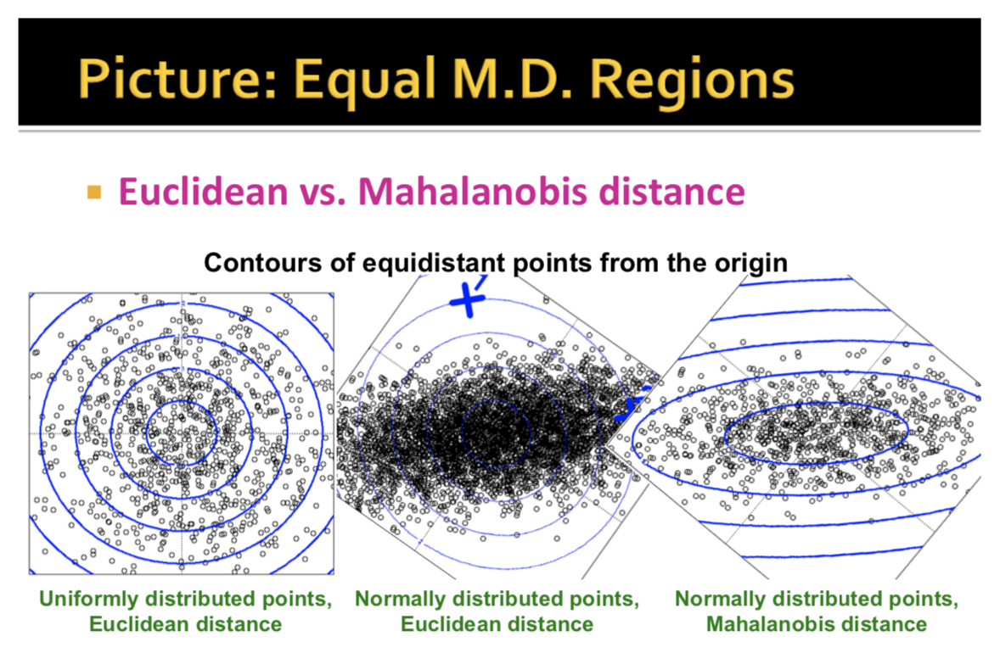

Lecture 5 - Clustering
The curse of dimensionality - in large dimensional spaces, almost all points are far away from each other, and almost any two vectors are almost orthogonal.
K-means
The Basic Algorithm for Clustering is K-means.
K-means is Expectation Maximization (EM) applied to a Naive Bayes Model.
- E step - Assign to each data point the centroid it is closest to
- M step - Update the new centroids as the mean of all the points assigned to it.
k centroids are initialized randomly (actually there is a lot of sensitivity to initizalition in terms of performance since we only find a local optimum).
nai
def kmeans(dataSet, k):
numFeatures = dataSet.getNumFeatures()
centroids = getRandomCentroids(numFeatures, k)
iterations = 0
oldCentroids = None
while not shouldStop(oldCentroids, centroids, iterations):
oldCentroids = centroids
iterations += 1
labels = getLabels(dataSet, centroids)
centroids = getCentroids(dataSet, labels, k)
return centroids
BFR Algorithm
K means for data that doesn’t fit in memory
Assumes that clusters are normally distributed around a centroid in Euclidean space. Standard deviations in different dimensions may vary. Clusters are axis-aligned ellipses.
Goal is to find cluster centroids, point assignment done in second pass
Want memory required O(clusters) not O(data)
Idea: rather than keeping data points, BFR keeps summary statistics of groups of points
Generates clusters dynamically as we discover more data.
BFR Algo
- Initalize K clusters/ centroids
- Load in a bag points from disk
- Assign new points to one of the K original clusters, if they are within some distance threshold of the cluster (see ‘Details’ below)
- incorporate those points to the cluster’s summary statistics and then add them to the discard set
- Cluster the remaining points, and create new clusters
- Use any in-memory clustering algorithm to cluster the remaining points and the old retained set (RS). Clusters go to Compression Set (CS), outlying points go to RS.
- Try to merge new clusters from step 4 with any of the existing clusters
- Adjust the statistics of the clusters to account for the new points.
- Add the count to n, add vector sum to the SUM, add sum of squares to SUMSQ
- Also consider merging compressed sets in the compression set at this stage.
- Repeat steps 2-5 until all points are eliminated.
- If this is the last round, merge all compressed sets in teh CS and all RS points to their nearest cluster.
Points are read from disk one main-memory-full-batch at a time
Most points from previous memory loads are summarised by sample statistics
Step 1) From the initial load we select the initial k centroids by some sensible approach
Possible Initializaitons
- Take k random points
- Take a small random sample and cluster optimally
- Take a sample, pick a random point, and then k-1 more points, each as far from the previously selected points as possible.
3 sets of summary statistics we keep track of (1)
- Discard Set (DS) - Already clustered
- Points close enough to a current centroid to be summarised
- Compression Set (CS) - Summarised but not assigned to cluster
- Groups of points that are close together but not close to any existing centroid.
- These points are summarised, but not assigned to a cluster
- Retained Set( RS) - Outlier points waiting for assignment
- Isolated points waiting to be assigned to a compression set.
For each cluster, the discard set is summarised by the 2d+1 points (n, SUM, SUMSQ), where d is the number of dimensions and
- n is the number of points, a scalar
- SUM is the vector sum, element wise, a vector
- SUMSQ is the sum of squares element wise, a vector
Then, the average in each dimension (the centroid) is SUM/n and variance of a clusters discard set in dimension i is :
SUMSQin−SUMin2. The cluster is defined with these two statistics.
Details:
Distance thresholds:
- Mahalanobis distance: The normalised Euclidean distance from centroid. Given point x, centroid c:
- d(x,c)=∑di=1([(xi−ci)/σi]2)‾‾‾‾‾‾‾‾‾‾‾‾‾‾‾‾‾‾‾√, where σi is the standard deviation of points in the cluster in the
ith dimension.
- It measures distances in different coordinates at different resolutions. It normalises each dimension by the stddev.
- If clusters are normally distributed in
d dimensions, then after one transformation, one stddev = (√d), that is, 68% of the points of the cluster will have a Mahalanobis distance <(√d).
- Accept a point for a cluster if its Mahalanobis distance for the point and the cluster is < some threshold, for example, 2 stddev.
When should 2 Compression Set (CS) clusters be combined?
- Compute the variance of the combined subcluster by adding the two (n, SUM, SUMSQ), combine two clusters if the combined variance is below some threshold.
(1)
There is a distance threshold that is used to assign points to one of the k original clusters.
Compression set- not attached to the cluster
Retained set - leftover points
CURE Algorithm (Clustering Using Representatives)
Motivations:
Problem with BFR/k-means: Assumes clusters are normally distributed in each dimension, and axes are fixed - ellipses at an angle are NOT ok. CURE algorithm
- Assumes a Euclidean distance, allows clusters to assume any shape.
- CURE uses a collection of representative points to represent clusters.
CURE Algorithm: 2 Passes:
(See Appendix 2 for pictures)
Pass 1: Getting Representative Points
0. Pick a random sample of points that fit into main memory.
- Initial Clusters by in-memory hierarchical clustering (group nearest points/clusters.)
- Pick representative points:
- For each cluster, pick a sample of points as dispersed as possible.
- From the sample, pick representatives by moving the points farthest away from each other (say) 20% towards the centroid of the cluster. The moved points are the representatives.
Pass 2: Assigning Points
- Rescan the whole dataset and place each point
p in the “closest cluster”
- Closest is the closest representative point to
p, p gets assigned to the representative’s cluster.
Intuition: A large, dispersed cluster will have large moves from its boundary, while a small dense cluster will have little move. So this also favours a small dense cluster over a nearby large dispersed cluster.
Appendices
Apendix 1: Mahalanobis Distance

Appendices
Apendix 1: More on CURE